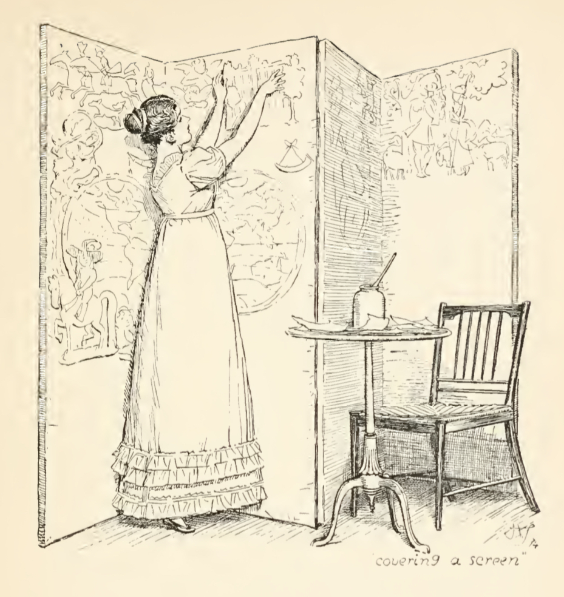

Мисс Кэтрин (Китти) – четвертая дочь Беннетов. Ей 17 лет: Китти на два года старше пятнадцатилетней Лидии, самой младшей из сестер.
Нарратор описывает Китти и Лидию как «наиболее легкомысленных из сестер» [Остин, 1967: 40]. С его точки зрения, эта характеристика является определяющей для их образов: до отъезда Лидии имена двух героинь практически всегда упоминаются вместе; почти все их действия и реакции отбираются нарратором в соответствии с его представлением об их легкомысленности. Рассмотрим отбор событий с участием героинь, который совершает нарратор, и их реакции на эти события (до эпизода с отъездом Лидии, когда сестры расстаются):
Книга, глава
Событие
Реакция / действия Китти и Лидии во время события
Книга первая, глава III
Бал в Незерфилде
«Кэтрин и Лидии посчастливилось ни разу не оставаться в танцах без кавалеров — большего от бала они пока не научились желать» [Там же: 18].
Книга первая, глава VII
Прибытие офицерского полка
«Они не могли разговаривать ни о чем, кроме офицеров» [Там же: 40].
Книга первая, глава VII
Реплика отца:
«Я понял из ваших рассуждений, что вы можете считаться двумя самыми глупыми девчонками в королевстве»
«Кэтрин смутилась и замолчала, но Лидия, не обратив на его слова никакого внимания, продолжала рассказывать про то, как она восхищена капитаном Картером» [Там же: 41].
Книга первая, глава VII
Сопровождение Элизабет до Меритона
«В Меритоне они расстались. Младшие сестры отправились к жене одного из офицеров, а Элизабет быстро зашагала вперед…» [Там же: 45].
Книга первая, глава VII
Визит миссис Беннет, Китти и Лидии в Незерфилд
«Китти и Лидия в течение всего визита перешептывались между собой. При этом они условились, что младшая должна напомнить мистеру Бингли про обещание устроить бал в Незерфилде» [Там же: 62].
Книга первая, глава XII
Возвращение Джейн и Элизабет в Лонгборн после болезни Джейн
«…Совсем в ином роде были сообщения Кэтрин и Лидии. С прошлой среды в полку произошло множество событий: несколько офицеров обедали у их дядюшки, был подвергнут телесному наказанию рядовой и распространились самые достоверные слухи о том, что полковник Форстер собирается жениться» [Там же: 83].
Книга первая, глава XIII
Получение первого письма от мистера Коллинза
«Для Кэтрин и Лидии письмо и его автор не представляли ни малейшего интереса. Нельзя было ожидать, что кузен появится в красном мундире, а за последние недели общество мужчин в одежде другого цвета не доставляло им никакого удовольствия» [Там же: 88].
Книга первая, глава XIV
Заявление мистера Коллинза, что он «никогда не читает романов»
«Китти изумленно на него уставилась, а Лидия даже от удивления вскрикнула» [Там же: 94].
Книга первая, глава XV
Поездка Беннетов в Меритон в компании мистера Коллинза
«…очутившись в городке, младшие сестры принялись поглядывать во все стороны <...> в поисках офицеров, так что отвлечь их от этого занятия мог только выставленный в окне лавки особенно модный чепчик или образчик только что привезенной кисеи» [Там же: 98].
Книга первая, глава XV
Первая встреча с Уикхемом
«Все складывалось необыкновенно удачно, ибо чтобы стать окончательно неотразимым, молодому человеку не хватало только полкового мундира» [Там же: 99] (нарратор описывает Уикхема с точки зрения Китти и Лидии).
Книга первая, глава XVII
Второй бал в Незерфилде
«Блаженство, которое предвкушали Кэтрин и Лидия, в меньшей степени было связано с какими-нибудь определенными людьми или обстоятельствами. И хотя каждая из них, подобно Элизабет, собиралась половину вечера танцевать с Уикхемом, он ни в коей мере не был для них единственным возможным кавалером — бал должен был быть балом при любых обстоятельствах» [Там же: 120].
Книга первая, глава XVII
Дождь перед вторым балом
«Только ожидание танцев во вторник позволило Китти и Лидии как-то пережить совершенно несносные пятницу, субботу, воскресенье и понедельник» [Там же: 123].
Книга первая, глава XX
Приезд Шарлот после того, как мистер Коллинз делает предложение Элизабет
Обращение Лидии к Шарлот:
«Хорошо, что ты приехала. У нас тут такое творится! Что бы ты думала случилось сегодня утром? Мистер Коллинз сделал предложение Лиззи, а она ему отказала!» [Там же: 157].
«Прежде чем Шарлот успела ответить, в прихожую вбежала Китти, сообщавшая ту же новость» [Там же].
Книга первая, глава XXIII
Помолвка мистера Коллинза и Шарлот
«Китти и Лидии не приходило в голову завидовать мисс Лукас, так как мистер Коллинз был всего-навсего священником. Для них эта помолвка была только одной из новостей, которую следовало распространить по Меритону» [Там же: 178].
Книга вторая, глава XVI
Поездка в Хартфордшир
«Две девицы премило провели в городке целый час, посетив модную лавку, поглазев на часового и приготовив салат с огурцами» [Там же: 301].
Книга вторая, глава XVI
Встреча Элизабет и Джейн в Хартфордшире
Обращение Лидии к Элизабет и Джейн: «Ой, девочки, а как мы позавчера повеселились у Форстеров!» [Там же: 304].
«Такого рода историями об их развлечениях и проделках, при поддержке вставлявшей изредка свои замечания Китти, Лидия пыталась веселить своих спутниц на протяжении всего пути до Лонгборна» [Там же: 305].
Книга вторая, глава XVIII
Последняя неделя пребывания полка в Меритоне
«Боже, что с нами станется! Что же мы теперь будем делать? — восклицали они на каждом шагу в порыве отчаяния» [Там же: 315].
Книга вторая, глава XVIII
Приглашение Лидии в Брайтон
«Ликование Лидии по этому поводу, обожание, с которым она стала относиться к миссис Форстер, восторг миссис Беннет и отчаяние Китти едва ли могут быть описаны. Не обращая никакого внимания на чувства сестры, Лидия носилась по дому в непрерывном экстазе <...> В то же время в гостиной неудачливая Китти невразумительно и вместе с тем нудно роптала на свою судьбу» [Там же: 316].
На основе отбора реакций и действий Китти и Лидии можно выделить основные сферы, которые их интересуют: 1) танцы, балы; 2) обсуждение новостей; 3) офицеры; 4) покупки в модных лавках; 5) романы. Так, нарратор фокусирует внимание читателя на легкомысленности интересов, которые лежат в основе союза двух сестер. Реакции Китти и Лидии в основном едины, и некоторые их реплики даже произносятся как бы одновременно обеими сестрами (см. пункты 17, 18).
Оценка окружающих тоже как правило направляется сразу на обеих сестер. Оценка отца выражается в его реплике из пункта 3; Элизабет называет Китти и Лидию невежественными, ленивыми и тщеславными [Там же: 295]; по ее мнению, они «бросают тень на репутацию своих сестер» [Там же: 318]; мистер Дарси характеризует поведение младших сестер Беннет как бестактное [Там же: 273]. Точка зрения этих героев, таким образом, совпадает с позицией первичного нарратора в плане негативного отношения к интересам и поведению Китти и Лидии.
Миссис Беннет, напротив, поддерживает позицию младших дочерей: «Я припоминаю то время, когда мне самой очень нравились красные мундиры и, признаюсь, в глубине души я и теперь к ним неравнодушна» [Там же: 41]. Круг интересов миссис Беннет совпадает с интересами Китти и Лидии; младшие сестры Беннет как бы воплощают характер поведения матери в младшем поколении.
Важно, однако, что хотя двух героинь часто оценивают едино, не разделяя на действия и реакции отдельно каждой, их характеры не совпадают. Это прослеживается уже в начале романа на примере пункта 3, когда героини по-разному реагируют на реплику отца: Китти «смутилась и замолчала», Лидия не обратила внимания на слова отца и продолжила рассказ о капитане [Там же: 41]. Разница реакций предвещает дальнейшее развитие образа Китти и стабильность характера Лидии.
После встречи с Джейн и Элизабет в Хартфордшире именно Лидия рассказывает «истории о развлечениях и проделках», в то время как Китти изредка вставляет свои замечания (см. пункт 17). В отборе нарратора в целом присутствует значительно больше реплик Лидии, чем Китти. Так нарратор создает образ Лидии как лидера в их паре – Китти скорее следует за сестрой, копируя ее поведение и характер. О том же говорит отцу Элизабет: «…Той же опасности подвергается и Китти, которая во всем следует за Лидией — глупой, тщеславной, праздной и совершенно разнузданной девчонкой» [Там же: 318].
Характер Лидии стабилен на протяжении всего романа – Китти начинает постепенно меняться после отъезда сестры. Нарратор и Элизабет замечают первое изменение в отношении героини к офицерам: «А к середине июня <...> Китти смогла без слез появляться в Меритоне — благоприятный симптом, позволявший Элизабет надеяться, что к рождеству ее сестра поумнеет настолько, чтобы заговаривать об офицерах не чаще одного раза в сутки» [Там же: 327]. Круг ее интересов меняется не сразу (когда приезжают Гардинеры, она сидит за туалетным столиком), и, как отмечает нарратор, в отсутствие сестры она становится более раздражительной [Там же: 391]. Однако после замужества Джейн и Элизабет Китти начинает проводить много времени в их обществе, и ее характер, по оценке нарратора, улучшается: «Она не была так упряма, как Лидия. И теперь, освобожденная от ее влияния, она под руководством Джейн и Элизабет стала менее раздражительной, менее вялой и менее невежественной» [Там же: 528].

Изменение, которое происходит с Китти, можно отчасти сравнить с развитием образа Элизабет. W. Deresiewicz анализирует эволюцию Элизабет через изменение ее отношения к предубеждениям. По Deresiewicz, в привычном для героини обществе принято коллективное мышление; личное мнение формируется в диалоге с окружающими [Deresiewicz, 1997: 509]. Так, например, мнение о Дарси формируется у Элизабет не в результате инцидента на первом балу, а в ходе обсуждения этого события с Джейн, Шарлот и миссис Беннет, когда героини высказывают свою оценку произошедшего [Ibid.: 507]. В результате диалога формируется предубеждение, которое воспринимается героями за истину.
Элизабет начинает менять свое отношение к предубеждениям, когда читает письмо Дарси. Его содержание противоречит привычным для нее истинам насчет Джейн и Уикхема; оно заставляет ее посмотреть на события под новым углом – с точки зрения Дарси, человека из другого общества, обладающего другим образом мышления. Само чтение письма происходит вне привычного для Элизабет общества, когда у нее нет возможности обсудить содержание прочитанного с близкими. Так, оказавшись в непривычных для себя условиях, перенимая новый для себя образ мысли, Элизабет меняется.
С одной стороны, образ Китти противоположен образу ее сестры. S. Morgan отмечает, что в конце романа Элизабет обретает свободное мышление, способность анализировать свой опыт и свои отношения с окружающими людьми [Morgan, 1975: 67]. По сравнению с такой эволюцией образ Китти статичен. Она становится «менее упрямой», «менее невежественной», т. е. развивается в плане личного характера – но не в плане способности к аналитическому мышлению.
С другой стороны, сам принцип развития Китти отчасти совпадает с тем, как меняется ее сестра. Образ мысли Элизабет начинает развиваться, когда она отстраняется от привычного общества – Китти меняется, когда отстраняется от общества Лидии. Китти и Лидия не существовали отдельно от всех остальных героев, однако ранее мы убедились, что до отъезда Лидии их имена почти всегда упоминались вместе и что сестра оказывала влияние на Китти – в этом смысле их пару можно воспринимать как отдельную замкнутую ячейку. Развитие Элизабет происходит благодаря ее способности отделиться от собственных предубеждений; развитие Китти происходит благодаря тому, что ее характер, зависимый от внешнего влияния, способен со временем отделиться от границ, заданных характером Лидии. Так, изменения, которые происходят с Элизабет и Китти, схожи механически: они происходят в результате образования дистанции между героинями и привычным для них обществом.
Таким образом, Китти как второстепенный персонаж тоже претерпевает своеобразную эволюцию. В сравнении с Элизабет ее образ статичен, однако по отношению к характеру Лидии она оказывается способной к развитию. Это прослеживается на нарративном уровне: в начале романа нарратор и персонажи оценивают действия и реакции двух сестер как нечто, свойственное им обеим и не нуждающееся в разделении на поступки отдельно каждой их них (за исключением единичных случаев, когда реакции героинь отличаются). После отъезда Лидии Китти начинает оцениваться как персонаж, все еще зависимый от окружения, но самостоятельный в своей способности к личным изменениям. История Китти демонстрирует, как механизм отделения от привычного общества, лежащий в основе эволюции Элизабет, может работать на примере персонажа, во многом противоположного по характеру и способностям.
Библиография:
Остин Дж. Гордость и предубеждение / Подг. изд. Н. М. Демурова, И. С. Маршак, Б. Б. Томашевский; отв. ред. М. П. Алексеев; пер. с англ. И. С. Маршака // Литературные памятники. М.: Издательство «Наука», 1967.
Deresiewicz W. Community and Cognition in «Pride and Prejudice» // ELH. 1997. V. 64. № 2. Pp. 503–535.
Morgan S. Intelligence in «Pride and Prejudice» // Modern Philology. 1975. V. 73. № 1. Pp. 54–68.